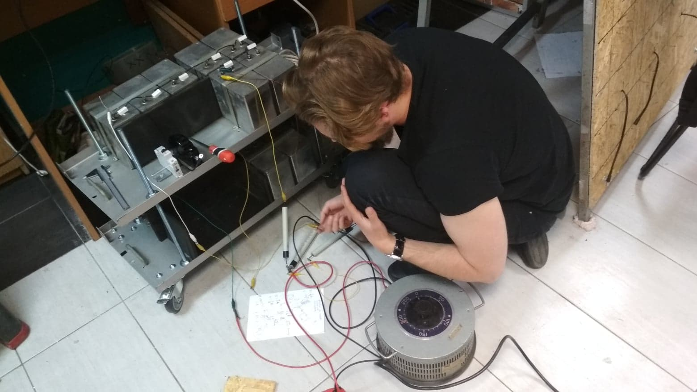

Producing energy poses a problem when it comes to pollution of environment. We use fossil fuels adding to our carbon footprint and degrading environment. The solution is seemingly trivial – turn fossil powered cars to electric ones and old coal plants to solar. But electric cars must get their power somewhere and solar plants are inefficient, expensive and not reliable. But let's take a look at our energy sources starting with fossil fuels. They are outcome of decomposition of organic mater, and we know that most life is dependent on light. Then we have wind and solar power which takes its energy indirectly from our Sun. So it seems the Sun is our only source of energy. But how does the Sun produce this energy? Well, it’s by nuclear fusion. It uses hydrogen as a fuel to generate helium and in effect gives away tons of electromagnetic radiation which we use as a source of our energy.
Stars use their gravitational force to generate pressure and temperature necessary to initiate fusion. We can’t recreate this conditions in laboratory with gravity for obvious reasons, but we can resort to other methods like colliding the ions of helium isotopes with significant kinetic energy using electric force. The simplest device which can make it happen is called Farnsworth-Hirsch fusor , and it’s the type of reactor that we decided to build. First we needed a power source capable of accelerating particles with enough momentum to overcome the strong force ( in this case 25keV ). For our project we chose a simple voltage multiplier capable of generating 7kW output at 35kV. The multiplier was constructed from oil capacitors ( 1kV 200μF )
The reactor chamber was made out of two metal half-spheres ( originally it was a diving air tank ). Chamber was galvanised with chromium to avoid undesirable particles to contaminate the vacuum, however due to welding problems there were some issues with vacuum leakage. Test with deuterium will be conducted after fixing vacuum problems. Below video presents construction of fusor and first tests of voltage source.